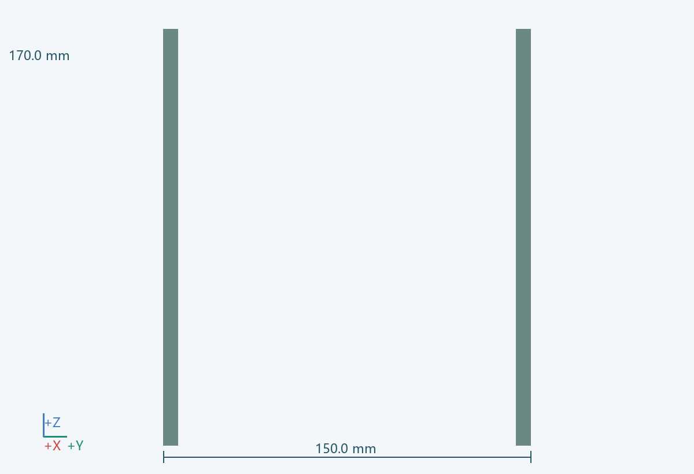
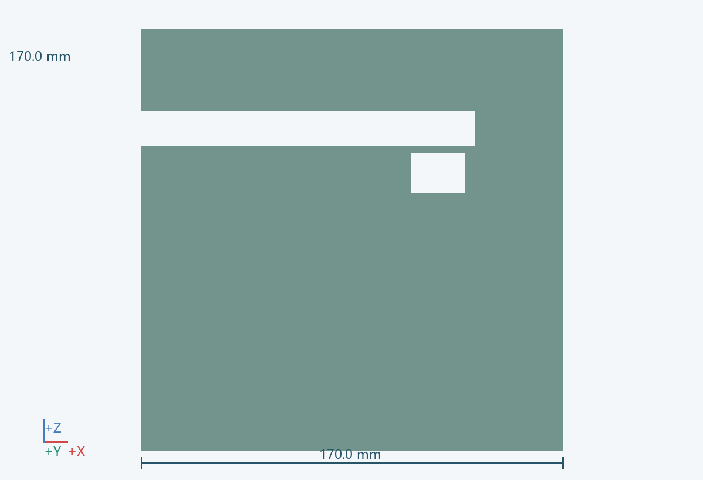
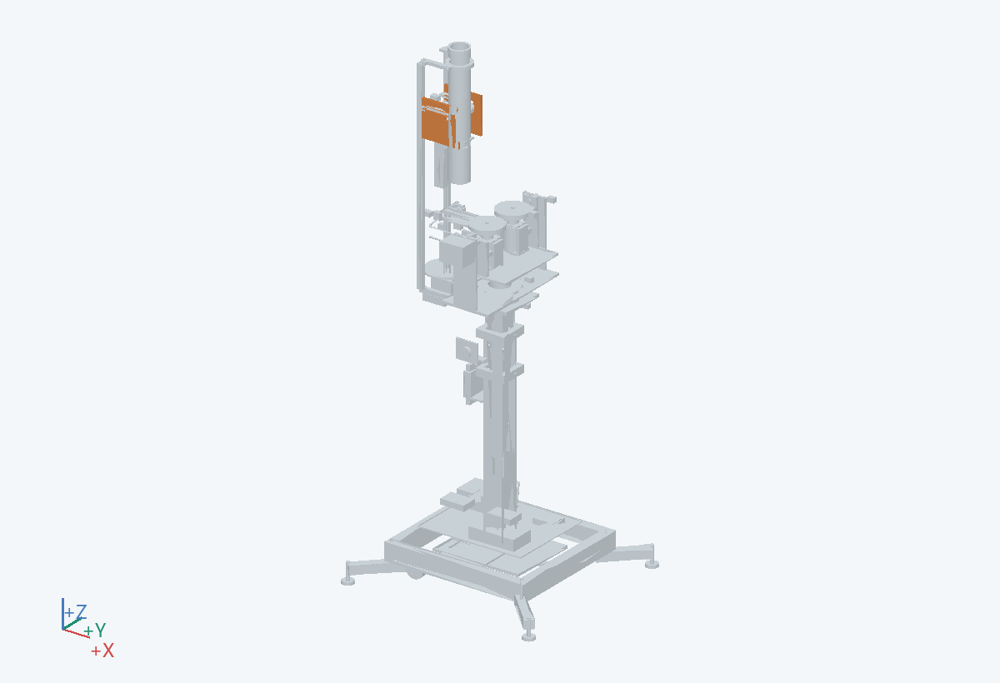

170.0 × 150.0 × 170.0 mm（含所示实例）
让球筒相对升降立柱保持固定，并安装单球分离件。
固定在 0202/0301 固定侧；不能挂到偏航/俯仰动侧。盒体分件在 V1 展开派生料号。
金属支架与可拆低速打印试验盒
筒与分球盒从后侧分别拆下。
与头部完整扫掠、导套和线束逐件求间隙；大包围盒相交并不必然是实际碰撞。 关联：U06
PRT-0602-F__-1, PRT-0602-F__1